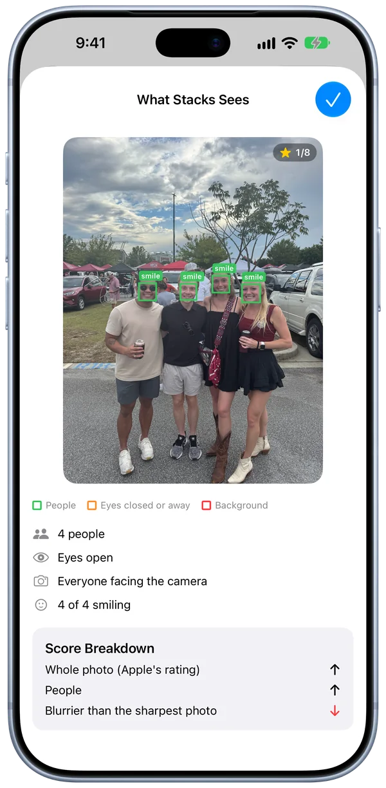

Now on the App Store
Stacks
The best of every moment.
We all take a few extra photos to get the right one. Stacks finds the best, puts it on top and helps you clear the rest.

Free.
No ads, no subscriptions, no in-app purchases.
Private.
Stacks doesn’t collect, share or see your photos.
Pick. Swipe. Stack.
Stacks finds the photos that look alike and keeps them together.
Swipe to keep the good ones and delete the rest.
The best photo always goes on top.
The photos you keep become one burst that takes up a single spot in your library.
Knows a good photo when it sees one.
Stacks adds its own layer to the image analysis built into iPhone. Stacks scores the photos in a moment to find open eyes, smiles, a sharp subject and the clearest copy of a document. Everything runs on your iPhone.
Raises the score
- Smiles
- Faces turned toward you
- A cat or dog looking at the camera
- Readable text on a document
Lowers the score
- Closed eyes
- Blur on the subject
- Haze or smudges
- A duplicate of another photo

You decide what’s deleted.
-
Your photos are copied into one stack
Each copy keeps its date, place, favorite, caption and albums.
-
Cover photo goes on top
-
Unstack anytime
The photos become separate again.
-
iOS asks before deleting
iOS removes only the separate photos, which are already in the stack. Deleted photos stay in Recently Deleted for 30 days.

Make short work of a long camera roll.
Keep only the best.
See exactly what stays and what goes before anything is deleted.
Biggest moments first.
Start where the extra photos pile up.
Press and hold.
Stack, keep the best photo or delete without opening a moment.
Stack in batches.
Select as many moments as you like.
See how much space you got back.
Clear the clutter.
Delete the moments you don’t need.
Each moment you picked becomes a separate stack.
Completely private.
No internet
Stacks never connects to the internet.
No data collected
No account. No ads. No tracking.
On your iPhone
Photos are analyzed on your iPhone with Apple’s built-in tools.
Try Stacks today.
- Price
- Free
- Requires
- iPhone with iOS 27 or later
- Language
- English
- Account
- None
- Data collected
- None
- Developer
- NUTTR
- Help
- Stacks Support